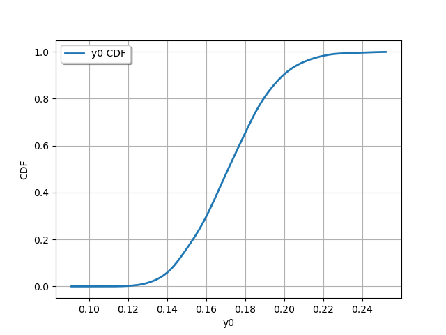
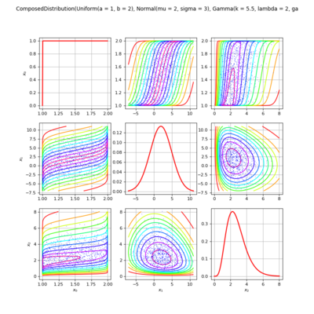
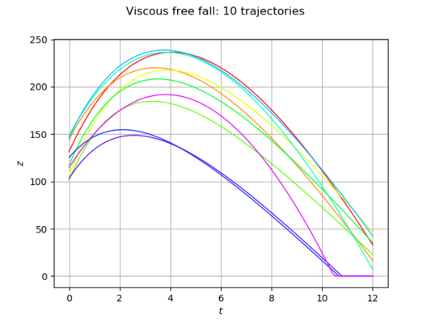
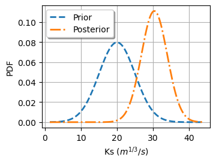
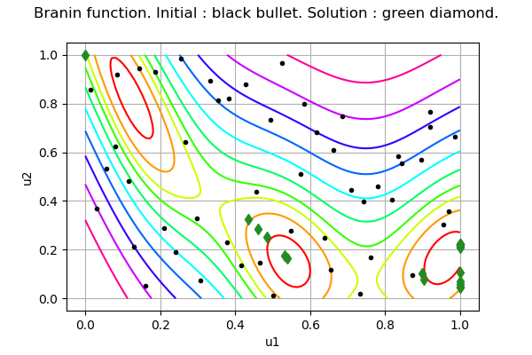

Home
Get it
Doc
Forum
Modules
Code
Bugs
OpenTURNS
An Open source initiative for the Treatment of Uncertainties, Risks'N Statistics
Navigation
index
next
|
previous
|
OpenTURNS 1.27dev documentation
»
Contents
»
Examples
Previous topic
Contents
Next topic
Getting started
This Page
Show Source
Quick search
Examples
¶
This is the examples section.
Getting started

Data analysis
Manage data and samples
Sample analysis
Distribution fitting
Statistical tests
Estimate dependency and copulas
Estimate stochastic processes
Graphics
Probabilistic modeling
Distributions
Copulas
Order Statistics
Random Vectors

Stochastic process modeling
Surrogate modeling
Linear regression
Polynomial chaos
Gaussian Process Regression
Fields surrogate models
Design of experiments
Reliability
Central dispersion
Reliability analysis
Reliability processes
Sensitivity analysis
Functional modeling
Univariate functions
Vectorial functions
Functional basis
Field functions
Link to an external code

Calibration
Least squares and Gaussian calibration
MCMC-based calibration

Numerical methods
General methods
Optimization
Iterative statistics

Graphs
Navigation
index
next
|
previous
|
OpenTURNS 1.27dev documentation
»
Contents
»
Examples


{kind=link}
{kind=link}
{kind=link}
{kind=link}
{kind=link}